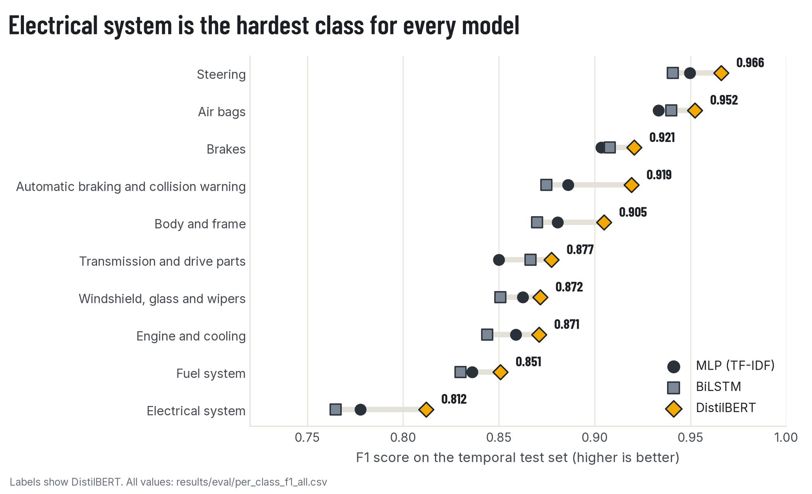
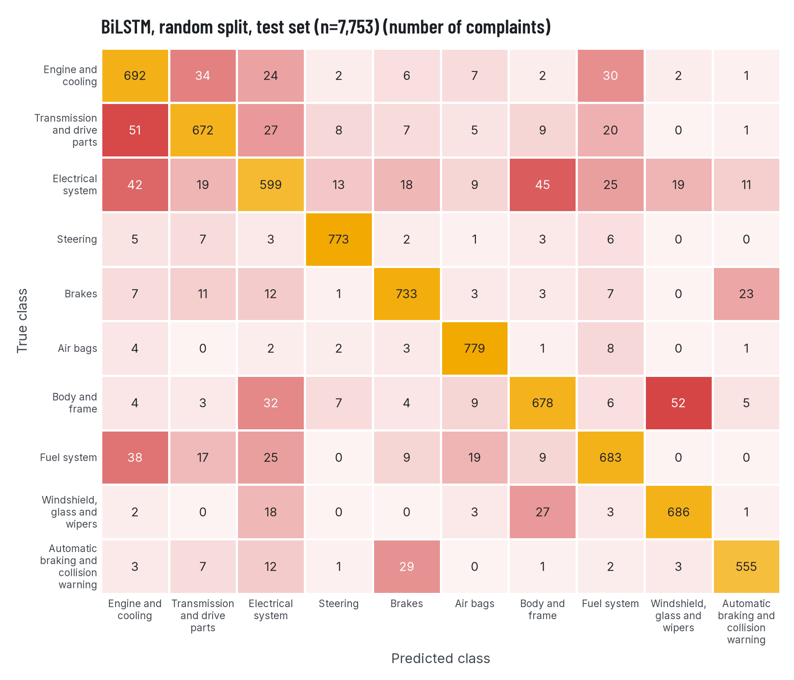

Summary
All numbers are on the test set, which each model scored once with its best validation checkpoint. Accuracy is the share of test complaints sorted correctly. Macro-F1 averages the F1 score of the 10 classes, so a small class counts as much as a large one. The interval is a 95% bootstrap interval from 1,000 resamples of the test texts.
Time-based test (main): complaints from May to October 2026
Random split test (comparison)
Full table: validation and test, both splits
| Model | Split | Val acc | Val macro-F1 | Test acc | Test macro-F1 | 95% interval (test macro-F1) | Train time |
|---|---|---|---|---|---|---|---|
| MLP (TF-IDF) | temporal | 0.8698 | 0.8727 | 0.8762 | 0.8771 | 0.8687 to 0.8843 | 24 s |
| MLP (TF-IDF) | random | 0.8864 | 0.8874 | 0.8851 | 0.8860 | 0.8786 to 0.8929 | 21 s |
| BiLSTM | temporal | 0.8648 | 0.8683 | 0.8687 | 0.8690 | 0.8604 to 0.8764 | 34 min |
| BiLSTM | random | 0.8852 | 0.8860 | 0.8835 | 0.8840 | 0.8772 to 0.8908 | 30 min |
| DistilBERT | temporal | 0.8901 | 0.8941 | 0.8913 | 0.8921 | 0.8849 to 0.8988 | 32 min |
| DistilBERT | random | 0.9023 | 0.9029 | 0.9060 | 0.9066 | 0.9000 to 0.9128 | 43 min |
On the time-based test (complaints from May to October 2026), DistilBERT reaches 0.8913 accuracy and 0.8921 macro-F1. The MLP reaches 0.8771 and the BiLSTM 0.8690. The test classes are capped at 800, so the class mix is balanced and differs from the real mix of complaints.
Are the differences real?
We checked two ways. McNemar's test compares the models on the same test complaints: it counts the complaints where one model is right and the other is wrong. The paired bootstrap resamples the test set and recomputes the difference in macro-F1.
| Pair | Only first is right | Only second is right | p-value (exact McNemar) |
|---|---|---|---|
| MLP (TF-IDF) vs BiLSTM | 325 | 270 | 0.027 |
| MLP (TF-IDF) vs DistilBERT | 209 | 319 | 1.9e-06 |
| BiLSTM vs DistilBERT | 189 | 354 | 1.3e-12 |
| Comparison | Split | Difference in test macro-F1 (points) | 95% interval (points) | Interval excludes 0 |
|---|---|---|---|---|
| BiLSTM minus MLP (TF-IDF) | temporal | -0.81 | -1.46 to -0.16 | yes |
| DistilBERT minus MLP (TF-IDF) | temporal | +1.50 | +0.93 to +2.15 | yes |
| DistilBERT minus BiLSTM | temporal | +2.31 | +1.73 to +2.96 | yes |
| BiLSTM minus MLP (TF-IDF) | random | -0.20 | -0.76 to +0.37 | no |
| DistilBERT minus MLP (TF-IDF) | random | +2.06 | +1.48 to +2.63 | yes |
| DistilBERT minus BiLSTM | random | +2.26 | +1.69 to +2.81 | yes |
DistilBERT beats both other models on both splits: the intervals exclude 0, and the McNemar p-values on the temporal set are 2e-06 (against the MLP) and 1e-12 (against the BiLSTM). The MLP and the BiLSTM are a weak case. On the temporal split the BiLSTM is 0.8 points lower, the interval barely excludes 0 and the McNemar p-value is 0.027, which would not pass a correction for three comparisons (the cutoff is 0.0167). On the random split the interval includes 0. We treat the two as roughly equal, with the MLP slightly ahead on the temporal split.
Time-based split vs random split

A random split scores higher for every model: 0.90 points for the MLP, 1.50 for the BiLSTM and 1.45 for DistilBERT in macro-F1. The time-based split is the fairer test of a system that sorts future complaints, so we report it as the main result. The gap is small, and we did not study why.
Results by class

| Class | MLP | BiLSTM | DistilBERT |
|---|---|---|---|
| Steering | 0.951 | 0.949 | 0.961 |
| Air bags | 0.934 | 0.929 | 0.961 |
| Brakes | 0.908 | 0.913 | 0.918 |
| Automatic braking and collision warning | 0.893 | 0.881 | 0.914 |
| Body and frame | 0.889 | 0.872 | 0.910 |
| Transmission and drive parts | 0.865 | 0.863 | 0.882 |
| Windshield, glass and wipers | 0.863 | 0.861 | 0.875 |
| Engine and cooling | 0.865 | 0.841 | 0.851 |
| Fuel system | 0.832 | 0.826 | 0.848 |
| Electrical system | 0.771 | 0.757 | 0.801 |
Same table for the random split
| Class | MLP | BiLSTM | DistilBERT |
|---|---|---|---|
| Steering | 0.949 | 0.962 | 0.964 |
| Air bags | 0.947 | 0.953 | 0.961 |
| Brakes | 0.902 | 0.910 | 0.930 |
| Automatic braking and collision warning | 0.922 | 0.917 | 0.935 |
| Body and frame | 0.874 | 0.859 | 0.891 |
| Transmission and drive parts | 0.862 | 0.856 | 0.895 |
| Windshield, glass and wipers | 0.927 | 0.913 | 0.932 |
| Engine and cooling | 0.846 | 0.840 | 0.863 |
| Fuel system | 0.862 | 0.859 | 0.879 |
| Electrical system | 0.769 | 0.771 | 0.815 |
Steering and air bags are easiest. Electrical system is the weakest class for every model on both splits: F1 0.771 for the MLP, 0.757 for the BiLSTM and 0.801 for DistilBERT on the temporal test. DistilBERT improves it by 3.1 points over the MLP, but it stays the weakest. Fuel system and engine come next.
Confusion matrices
Each row is the true class and each column is the predicted class. A perfect model would have 1.00 on the diagonal. Amber cells are correct answers and red cells are mix-ups. With JavaScript on, the tabs show one model, split and view at a time; without it all twelve matrices are listed.





The top mix-ups on the temporal test, both directions combined, are in the table below. Source: results/eval/<model>/temporal/metrics.json.
| Model | Pair 1 | Pair 2 | Pair 3 |
|---|---|---|---|
| MLP (TF-IDF) | Engine and cooling / Fuel system: 81 | Electrical system / Fuel system: 76 | Body and frame / Windshield, glass and wipers: 72 |
| BiLSTM | Engine and cooling / Fuel system: 93 | Electrical system / Fuel system: 78 | Body and frame / Windshield, glass and wipers: 77 |
| DistilBERT | Engine and cooling / Fuel system: 79 | Body and frame / Windshield, glass and wipers: 71 | Electrical system / Engine and cooling: 68 |
Training curves
The left panel shows training and validation loss, the right panel shows validation macro-F1. The ringed point marks the checkpoint we kept. The MLP overfits after the first epoch, which is why its best epoch is 1.


Random split curves


Call-centre texts vs owner-written texts
7,320 test complaints split into 5,724 owner-written texts and 1,596 call-centre texts. Accuracy is about the same for both. Macro-F1 looks lower for call-centre texts, but only 7 of them belong to the windshield and wiper class, so that class's F1 is very noisy. The last column drops classes with fewer than 30 texts in the group, and then the two groups score in the same range for every model. We found no sign that the formal call-centre style makes the task easier.
| Model | Text type | Texts | Accuracy | Macro-F1 | 95% interval | Macro-F1, classes with 30+ texts |
|---|---|---|---|---|---|---|
| MLP (TF-IDF) | owner-written | 5,724 | 0.875 | 0.877 | 0.869 to 0.885 | 0.877 |
| BiLSTM | owner-written | 5,724 | 0.866 | 0.868 | 0.859 to 0.876 | 0.868 |
| DistilBERT | owner-written | 5,724 | 0.892 | 0.894 | 0.886 to 0.901 | 0.894 |
| MLP (TF-IDF) | transcript | 1,596 | 0.881 | 0.857 | 0.823 to 0.883 | 0.879 |
| BiLSTM | transcript | 1,596 | 0.878 | 0.860 | 0.826 to 0.884 | 0.873 |
| DistilBERT | transcript | 1,596 | 0.890 | 0.863 | 0.827 to 0.888 | 0.889 |
Where the models fail
- Neighboring groups. The largest mix-up is engine and cooling and fuel system. A symptom such as a car that stalls, shudders or loses power can fit several systems.
- Shared mistakes. 1,330 of 7,320 test complaints are wrong for at least one of the three models, and the 497 in the box above are wrong for all of them.
- Stubs. Some call-centre texts keep only a stub such as “the contact received notification of; however, the part to do the recall repair was not yet available”, because we removed the campaign number and component name. 229 test texts contain such a stub. DistilBERT is right on 77.3% of them, against 89.5% of the other texts.
- Keywords. The highlights below show a model leaning on one word. In example 4, the word “autopilot” pulls a complaint toward collision avoidance even though NHTSA filed it under the electrical system.
- Labels are not ground truth. NHTSA staff assign the groups, and a complaint that fits two groups gets only one label here.
- Truncation. The BiLSTM keeps the first 256 tokens: 4.4% of training texts and 9.1% of test texts are longer.
- Vehicle names. Brand and model names stay in the text. Some of the score may come from knowing which vehicles have which known problems.
- Balanced test. Classes are capped at 800 in the test set, so the numbers describe a balanced mix, not the real mix of complaints. Windshield and wipers, air bags and collision avoidance have fewer than 800 test complaints.
- Scope. We use only complaints with one label, in ten groups, from one six-month test window.
Examples of mistakes
15 random misclassified complaints (DistilBERT, temporal)
| True class | Predicted class | Confidence | Written by | Text (first 300 characters) |
|---|---|---|---|---|
| Electrical system | Automatic braking and collision warning | 0.89 | call centre | the contact owned a 2024 toyota prius prime. the contact stated that while driving 20 mph with cruise control engaged, while depressing the brake pedal, the vehicle accelerated. the vehicle crashed into the rear bumper of the vehicle ahead. the air bags deployed and the vehicle was deemed a total lo |
| Electrical system | Engine and cooling | 0.52 | call centre | the contact owns a 2023 bmw x3. the contact received notification of; however, the part to do the recall repair was not yet available. the dealer was contacted and confirmed that parts were not yet available for the recall repair. the contact stated that the manufacturer had exceeded a reasonable am |
| Electrical system | Transmission and drive parts | 0.98 | owner | i had a recall completed in march 2023 for transmission issues. since january 2026, my vehicle has been in a repair for a part that is backorder. the part is transfer case control module (tccm). the part number is 68540646aa for a 2014 jeep cherokee latitude v6 3.2 4x4. i feel that this is unfair an |
| Fuel system | Electrical system | 0.40 | call centre | the contact owns a 2021 ford bronco sport. the contact received notification of; however, the part to do the recall repair was not yet available. the dealer was contacted several times and confirmed that the parts were not yet available for the recall repair. the contact stated that the manufacturer |
| Brakes | Engine and cooling | 0.95 | owner | the vacuum pump failed and leaks oil on manifold, leading to burning oil on manifold. the vehicle has 75,000 miles [xxx] |
| Transmission and drive parts | Body and frame | 0.43 | call centre | the contact owns a 2020 ford explorer. the contact received notification of; however, the part to do the recall repair was not yet available. the local dealer was contacted. the contact stated that the manufacturer had exceeded a reasonable amount of time for the recall repair. the manufacturer was |
| Transmission and drive parts | Engine and cooling | 0.94 | owner | underwent ford safety recall 26s28 on 7/27. after safety recall, check engine light remained on. mobile service returned on 7/29, and tech stated that "engine relearn process" was not completed. he stated that he completed the recall. one hour later (next time i drove the truck) while going over 70 |
| Transmission and drive parts | Automatic braking and collision warning | 0.45 | call centre | the contact owns a 2025 subaru outback. the contact stated that while driving on the freeway in stop-and-go traffic with the automatic braking system activated, the vehicle erroneously reversed and failed to immediately stop while depressing the brake pedal. the contact shifted out of drive(d) and t |
| Brakes | Fuel system | 0.97 | call centre | the contact owns a 2017 ram 2500. the contact received notification of; however, the part to do the recall repair was not yet available. the contact stated that while driving and releasing the accelerator pedal, the vehicle decelerated excessively and felt like the brakes were depressed. the dealer |
| Electrical system | Steering | 0.99 | owner | addendum to complaint number xxx: the vehicle is now completely undriveable and parked at my residence due to the severe safety hazard of the electric power steering (eps) system locking up completely after 10 minutes of operation. i have contacted chrysler corporate (case # xxx) and multiple local |
| Fuel system | Transmission and drive parts | 0.97 | owner | transmission valve body failure contestant with recall # n242454440. dealer diagnosed valve body failure and corrective action of valve body rebuild. i would like 2024 models to be included with this recall for proper repair per special coverage # n242454441. |
| Transmission and drive parts | Engine and cooling | 0.98 | owner | i have been smelling engine coolant for some time and found a leak on the drivers side top seam where the aluminum meets the plastic tank on the radiator. this is a known problem with 2019=2026 chevy blazers by gm and it still hasn't been resolved. after researching, i have found numerous blazer own |
| Steering | Transmission and drive parts | 0.99 | owner | turning the wheels both forward and backward while moving causes a pinging sound in the cv joint. i have started hearing this noise after 20,000 miles and the noise is getting louder. i am concerned either the axle will give out or the cv joint will break causing an accident. |
| Body and frame | Windshield, glass and wipers | 0.85 | owner | the glass piece that sits between the front windshield and the sunroof cracked from side to side of the car. when i called the dealership to get it repaired they said this has happened to a few models with this same type of glass between the windshield and the sunroof. |
| Transmission and drive parts | Electrical system | 0.92 | owner | with idle start/stop enabled, there have been multiple occasions where the system has not restarted, causing my wife to almost get into an accident with my two young daughters in the car. honda has looked at it on two occasions and claims there is no issue. however when researching this online, it h |
Other models: MLP, BiLSTM. Complaints wrong for all three models: errors_all_models.csv.
5 random confident correct predictions
| Class (correct) | Confidence | Text (first 300 characters) |
|---|---|---|
| Automatic braking and collision warning | 0.97 | the contact owned a 2024 acura zdx. the contact stated that while driving on several occasions, the vehicle unintendedly applied the brake with the brake warning light illuminated and an audible alert sounding. the vehicle had experienced phantom braking. the contact stated that due to the failure, |
| Engine and cooling | 0.99 | * engine/ yes available for inspection. * has not happened yet, however the risk exists. * yes, oil consumption and has been confirmed by dealer and monitored every 1,000 miles. * been inspected by local dealer only. * yes, low oil pressure light came on. i was 2 qtrs. low, xxx my vehicle was inspec |
| Steering | 1.00 | steering yes it is available for inspection upon request the steering becomes so out the vibration becomes so violent that you can not hold the wheel you have to pull over anyone driving could be in danger including vehicles around you with how violent the steering wheel vibrates when taken for alig |
| Transmission and drive parts | 0.99 | hello. i recently went in for fords recall regarding 2015-2017 6r80 transmissions and their limp mode and sudden downshift issues. i got the recall done july 31st (if memory serves) but the fix did not work. i came back in september 3rd to complain and ask them to diagnose and asked if they would fi |
| Body and frame | 1.00 | real bumper assembly rotted off the frame was dragging behind the truck i'm at 60mph luckily nobody was behind me pulled over and removed it all both frame rails was rusted in half hanging on by a little piece every place i called will not fix it want me to buy a whole frame truck has 220 miles on i |
Which words drive a prediction
For six test complaints we removed one word at a time and measured how much the model's confidence in its own answer dropped. Amber words support the predicted class and gray words argue against it. The value is the drop in the log-odds of the predicted class (hover over a word to see it). Two examples were right for both models, two were wrong for both, and two were right for DistilBERT and wrong for the BiLSTM. We drew them at random from complaints of 25 to 90 words (seed 42), two from each case. Method and values: results/eval/word_importance/word_importance.json.
Example 1: Fuel system (both models right)
gas leak in the fuel system. obvious gas smell when car is turned on. because of the impending danger i have taken the vehicle to á local independent service center for evaluation. they are in the process of confirming the problem. i could not chance driving too far to the dealer because of the hazzard and risk. there were no warning lights indicating the problem.
gas leak in the fuel system. obvious gas smell when car is turned on. because of the impending danger i have taken the vehicle to á local independent service center for evaluation. they are in the process of confirming the problem. i could not chance driving too far to the dealer because of the hazzard and risk. there were no warning lights indicating the problem.
Example 2: Steering (both models right)
my cars had a clunking type noise coming from the front left of vehicle, sounds happens on both left and right turns, and sometimes the steering wheel sticks. making a knocking sound and sometimes feels difficult to turn the wheel. i had to have the steering gearbox assembly replaced at cost of over $3015 before taxes.
my cars had a clunking type noise coming from the front left of vehicle, sounds happens on both left and right turns, and sometimes the steering wheel sticks. making a knocking sound and sometimes feels difficult to turn the wheel. i had to have the steering gearbox assembly replaced at cost of over $3015 before taxes.
Example 3: Brakes (both models wrong)
the contact owns a 2022 ram 1500. the contact stated that while driving 70 mph on the interstate, the vehicle lost traction and fishtailed on the wet roadway. while at a stop and turning, the vehicle started spinning like the vehicle was driving on ice, even though the outside temperature was hot. the local dealer was contacted and scheduled an upcoming appointment. the manufacturer was contacted but was unsure if a complaint was taken due to a language barrier. the failure mileage was approximately 30,000.
the contact owns a 2022 ram 1500. the contact stated that while driving 70 mph on the interstate, the vehicle lost traction and fishtailed on the wet roadway. while at a stop and turning, the vehicle started spinning like the vehicle was driving on ice, even though the outside temperature was hot. the local dealer was contacted and scheduled an upcoming appointment. the manufacturer was contacted but was unsure if a complaint was taken due to a language barrier. the failure mileage was approximately 30,000.
Example 4: Electrical system (both models wrong)
tesla on autopilot crossed over the double yellow line and hit our red jeep head on. both vehicles were totaled and all passengers were injured.
tesla on autopilot crossed over the double yellow line and hit our red jeep head on. both vehicles were totaled and all passengers were injured.
Example 5: Body and frame (right for DistilBERT, wrong for the BiLSTM)
the fender liner detached and was getting caught up in the tire, i had to pull it out and then it was dragging on the ground. it was hard to turn because it was getting under the tire. finally, one was pulling into my driveway and i felt a bump. i thought i’d ran over something, it was the fender liner underneath the truck. these liners are made of terrible materials. i never had a problem with one until this truck.
the fender liner detached and was getting caught up in the tire, i had to pull it out and then it was dragging on the ground. it was hard to turn because it was getting under the tire. finally, one was pulling into my driveway and i felt a bump. i thought i’d ran over something, it was the fender liner underneath the truck. these liners are made of terrible materials. i never had a problem with one until this truck.
Example 6: Engine and cooling (right for DistilBERT, wrong for the BiLSTM)
vehicle was disabled multiple times after failures of the oem coolant / heater hoses at plastic fittings. hoses includes the primary radiator coolant hoses, bypass hoses and engine coolant hoses for the transmission cooler. first hose failure on 10/21/2022 (51,177) miles was repaired by ford dealer in davenport, fl. oem replacement hoses have also failed.
vehicle was disabled multiple times after failures of the oem coolant / heater hoses at plastic fittings. hoses includes the primary radiator coolant hoses, bypass hoses and engine coolant hoses for the transmission cooler. first hose failure on 10/21/2022 (51,177) miles was repaired by ford dealer in davenport, fl. oem replacement hoses have also failed.
Removing one word at a time understates words that are repeated or have close substitutes, so a confident model can show small values everywhere. These examples illustrate the models. They do not prove how the models work.
Files
Everything is in the repository: summary_table.csv, significance.json, transcript_vs_owner.csv, and the per-model folders under results/. The evaluation script is 08_evaluate.py.